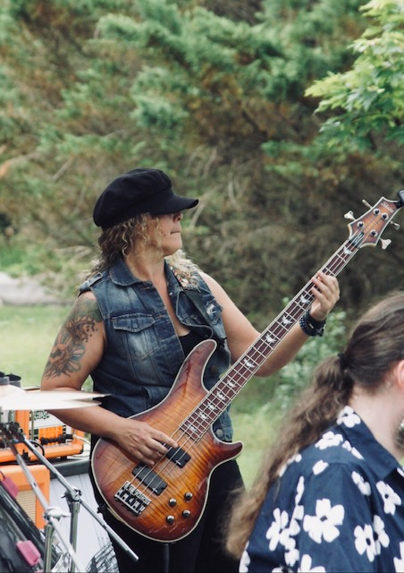
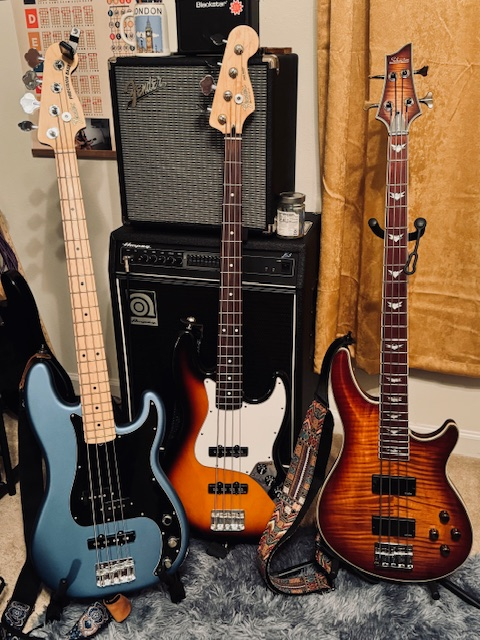

Schecter Jazz Bass
My Schecter bass is part of a company that has been making guitars since 1976, when Schecter Guitar Research was founded in California. It has a Jazz Bass style that gives me a different sound and feel from my Fender Precision Bass. One of my favorite things about it is the natural wood finish because I really like being able to see the grain of the wood, and it gives the bass a unique look. It is also noticeably lighter than any of my Fenders, which makes it comfortable to play during longer rehearsals and shows. I customized it by adding flatwound strings, which feel smoother and are much easier on my fingers when I play. Even though I really enjoy my Schecter, I've been playing my P Bass a lot more lately. I go back and forth between the the two depending on the songs we're playing and the feel I want for the venue we're playing at.

Songs I Like to Play on My Schecter Jazz Bass
- Dreams - Fleetwood Mac
- Stop Draggin' My Heart Around - Stevie Nicks and Tom Petty
- Attention - Habitual Strangers
- What's Up - Four Non Blondes
My Starter Collection
